Open-source view camera
A rigid 6×7 architecture camera you print at home and put together without a single screw. A self-locking worm for the rise, turned from the side through a printed miter pair, a back that turns with a click.
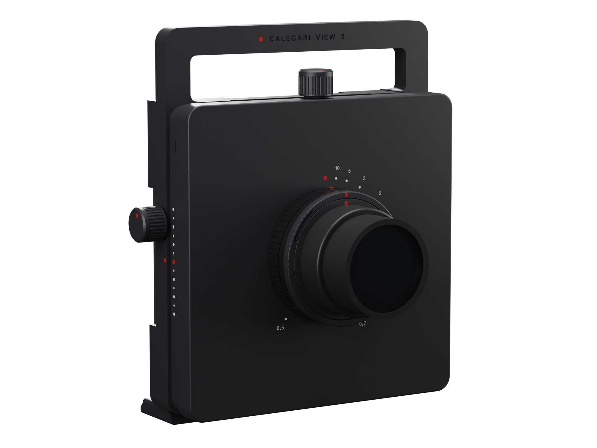
Why
View 1 works, but building it means buying and sorting screws, inserts and nuts in half a dozen sizes. View 2 asks what a printer can do by itself.
Every fastener of View 1 has a printed answer here: dovetail ways whose wall is a spring instead of a gib and grub screws, a printed worm that holds the front standard wherever you leave it, knobs that snap onto their shafts, plugs that close the ways, a bayonet for the lens boards. What you buy is the focusing helicoid and a sheet of velvet, then the lens and the film back.
It also moves further, 30 mm each way; the film turns from landscape to portrait while the camera stays on the tripod; and it looks like one object: at zero the three plates are a single square block, and the front is nothing but the lens.
Specifications
Gallery
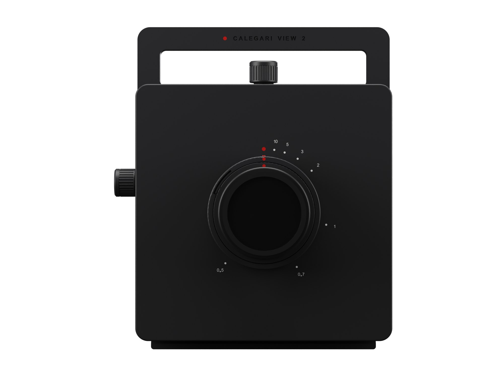
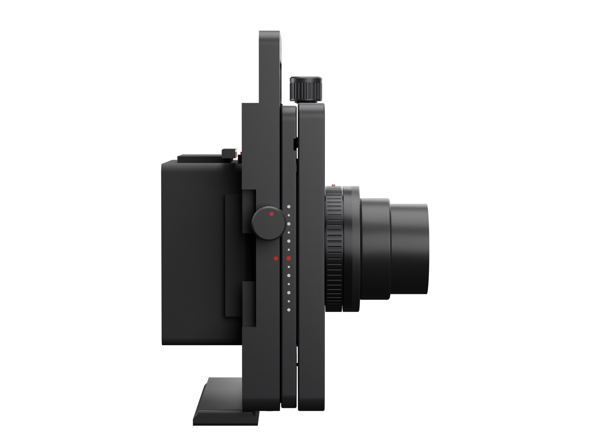
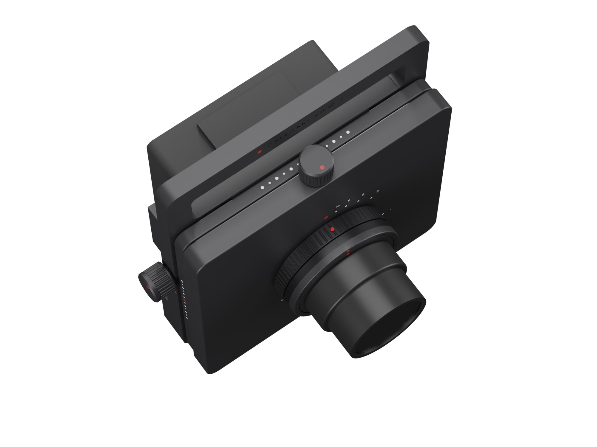
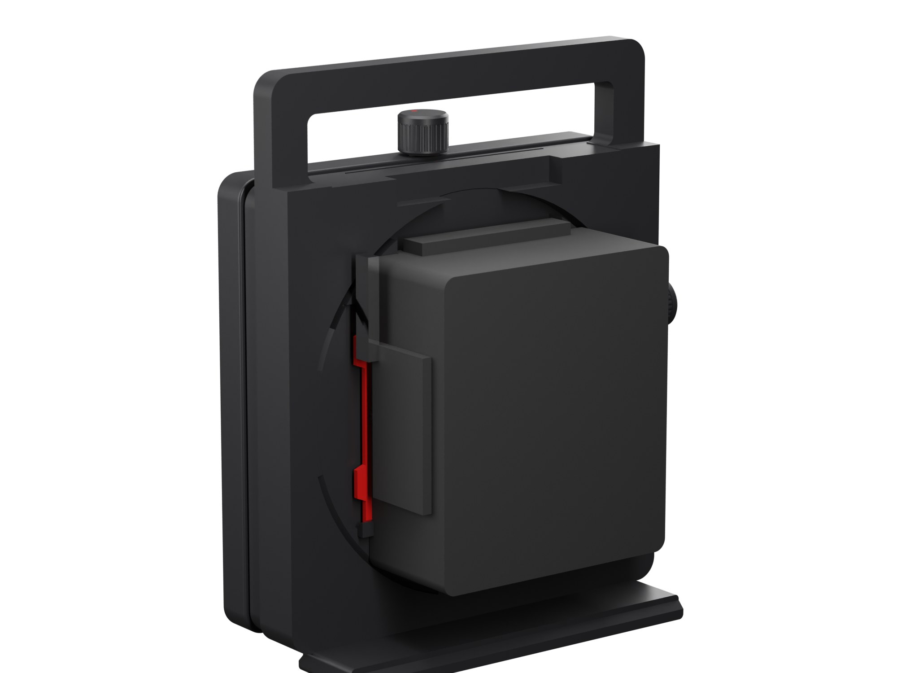
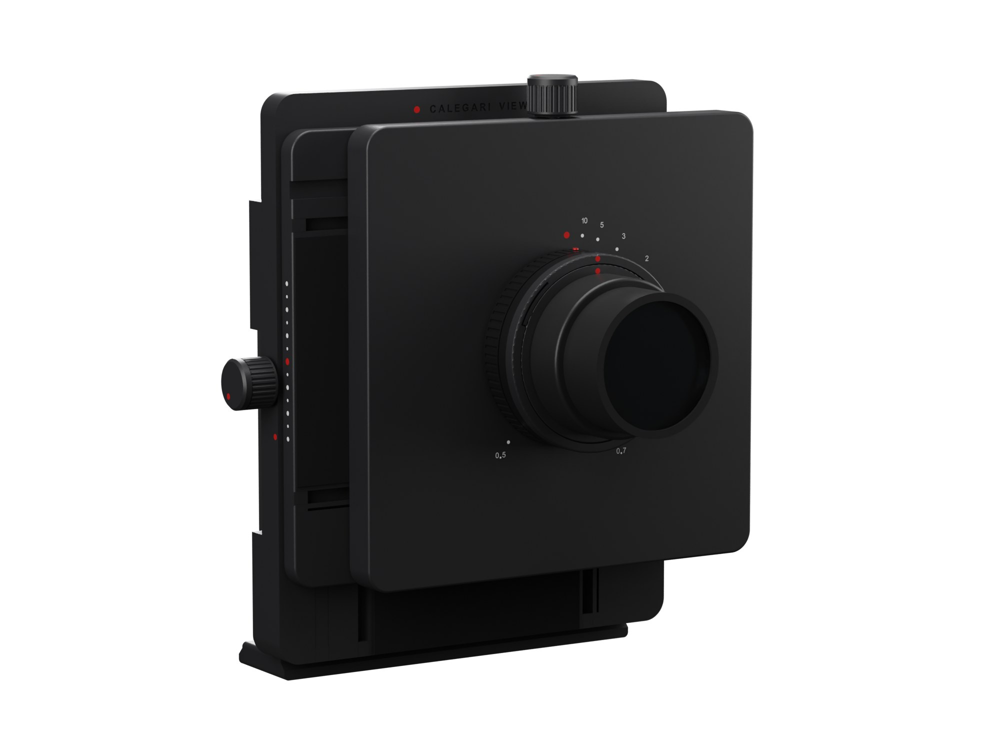
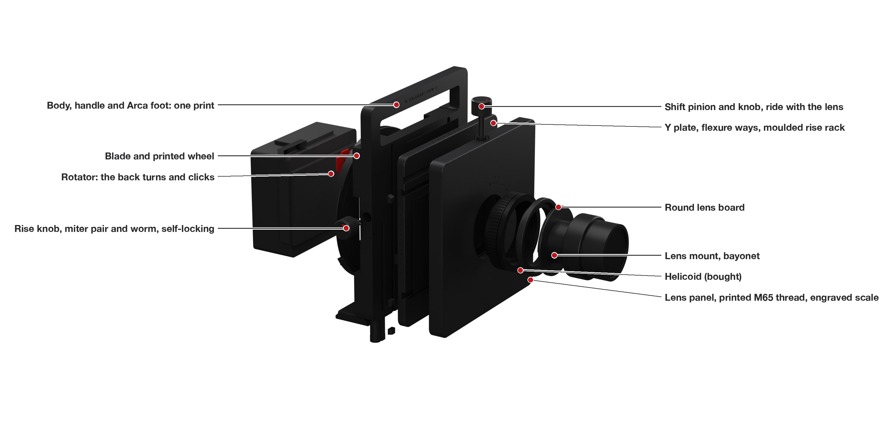
How it works
Build
Four small test plates first: shrinkage, the M65 thread, the bayonet, the worm, the pinion and the dovetails. Then seven plates. The only tools are scissors and a craft knife for the velvet: every part slides, snaps or presses into place. The guide has 22 illustrated sub-steps, each with the new parts pulled out toward where they go and a table of what to do and what to check.
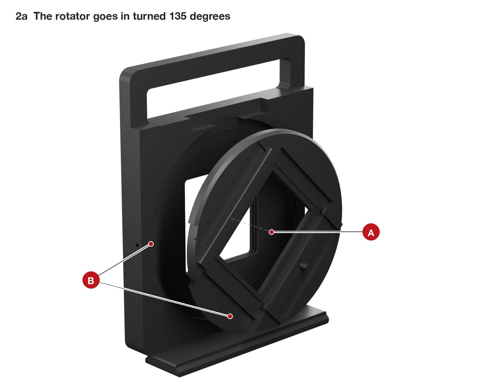
In at 135 degrees past the lugs, a turn to landscape, the stop peg.
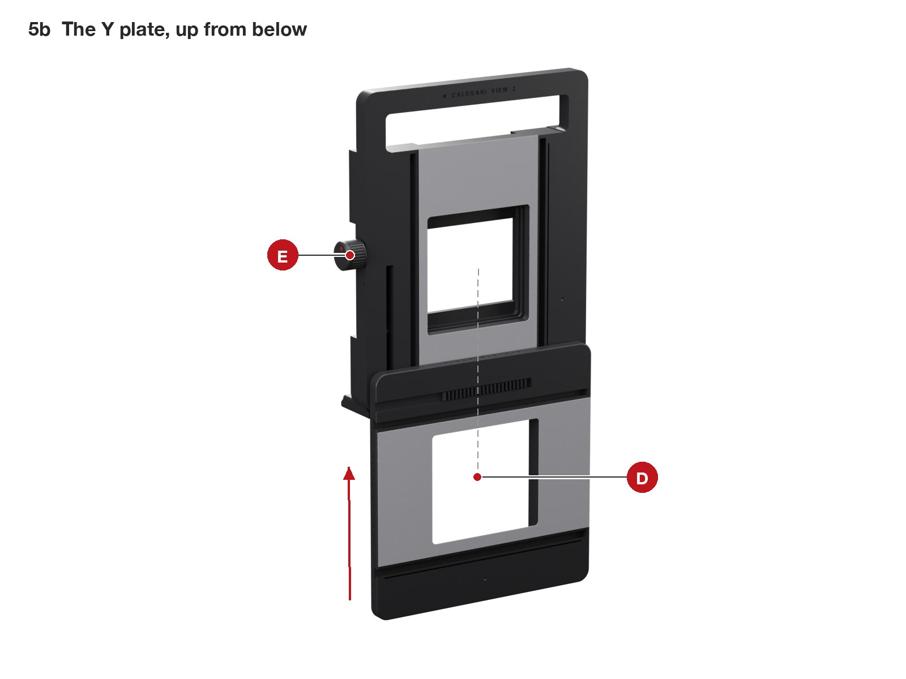
The worm up from below, then the plate until its rack meets the worm; the knob draws it home.
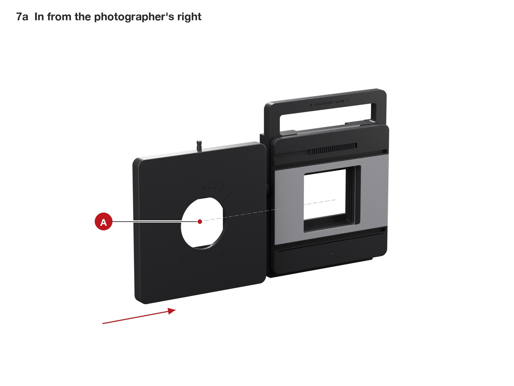
In from the side, two plugs, the shift knob on top.
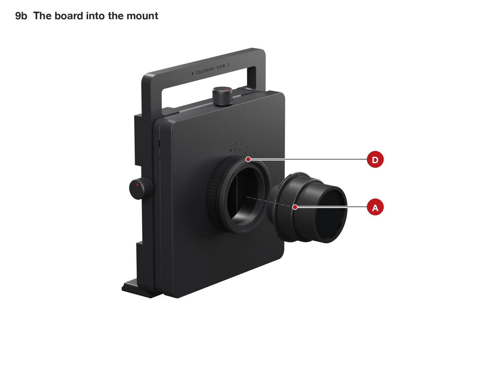
On its board, into the bayonet: a turn and a click.
Checked before it is printed
The whole camera is a parametric model, and every change runs through the same checks: every pair of parts at eleven positions of the movements and the back, the mechanisms one by one, the velvet seal between the plates, and a ray trace from the lens to the corners of the film through every part, at infinity and focused close, landscape and portrait.
interferences, at zero, at the ends of the travel, in landscape and portrait
narrowest velvet seal between the sliding plates, at any position
lead of the rise worm, against a 17° friction angle: the front standard cannot fall
mm of rise and shift together with clean corners at infinity; 30 on one axis
What a computer cannot prove, a test print can: the thread, the bayonet, the drive and the dovetails come first, on small plates, before the body. The test prints guide says what to look for and which number to change.
Files